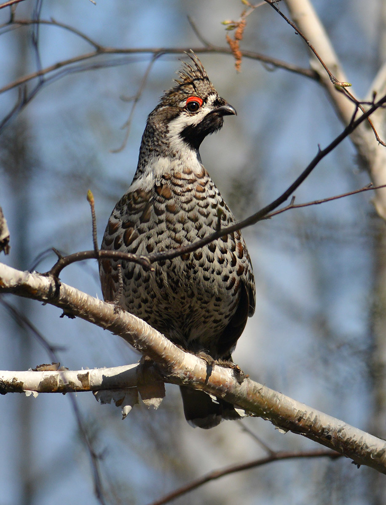
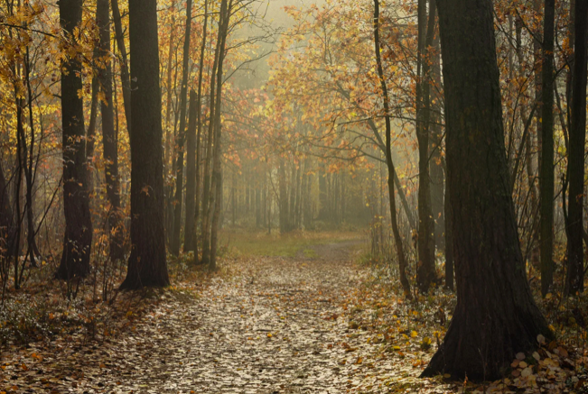

Люблю я бродить по лесу поздней осенью, перед самым приходом зимы. Всё в нём как-то примолкло, будто ждёт чего-то. Кусты и деревья давно сбросили листья, стоят совсем голые, потемневшие от осенних дождей.Опавшая листва не шуршит под ногами, как в самом начале осени. Теперь она плотно прибита к земле, лежит бурой преющей массой. По всему лесу от неё так славно пахнет деревенским холодным кваском.

А какая в лесу тишина! Только где-то в вершинах сосен и елей попискивают синички и корольки.
Они
перепархивают с
сучка на сучок, копошатся среди ветвей, отыскивая там жучков.

Изредка тонко, протяжно засвистит в ельнике рябчик, и снова всё смолкнет.
Идёшь по влажной земле совсем бесшумно, идёшь и осматриваешься по сторонам, хочешь запомнить лес именно вот таким — угрюмым, нахмурившимся. Ведь очень скоро, может быть через день, через два, он станет совсем иным: весь посветлеет, оденется в белый снежный убор, сразу преобразится, как в сказке. И не узнать тех самых кустов и деревьев, на которые я теперь смотрю.
